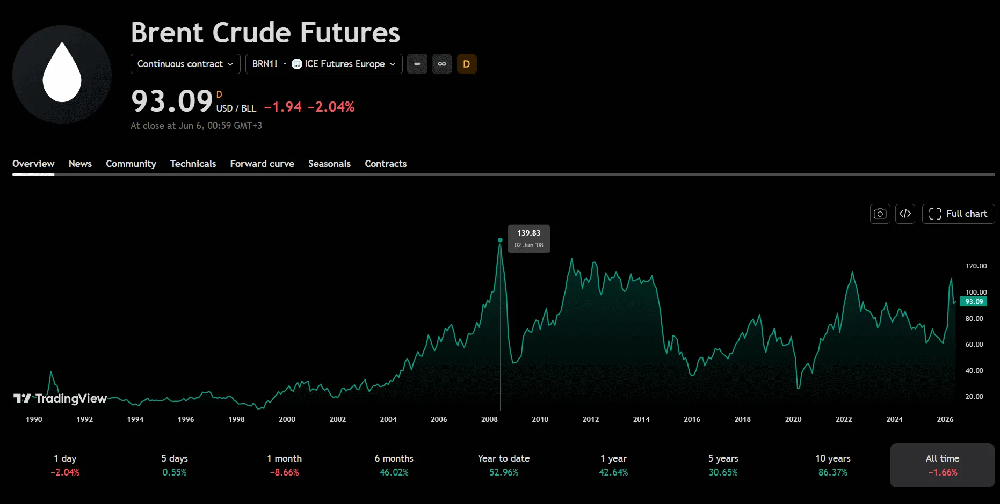

Kaikki muistaa vuoden 2008 finanssikriisin, tuolloin raakaöljyn hinta kävi korkeimmillaan sen ollessa 139,83 dollaria per öljytynnyri. 2008 heinäkuussa polttoaineen keskihinta oli pumpulla 95 E 1,58 €/l ja diesel 1,44 €/l kun mennään muutama vuosi eteenpäin ja tullaan koronaaikaan öljybarrellin hinta oli maaliskuussa 2020 vain 26,35 dollaria mutta pumpulla polttoaine maksoi keskimäärin 95 E 1,43 €/l ja diesel 1,30 €/l (lähde stat.fi/tilastokeskus) mistä tämä sitten johtuu?
Polttoaineiden pumppuhinnoista reilusti yli puolet on pelkkää veroa, Suomessa polttoaineen hinnasta noin 60–65% on veroja ja maksuja eli valmisteveroa, arvonlisäveroa ja huoltovarmuusmaksua, tämä tarkoittaa sitä että vaikka raakaöljyn hinta puoliintuisi yön aikana et välttämättä huomaa pumpulla läheskään samansuuruista laskua. Koska polttoaineen hinta nousee myös tulevaisuudessa tulee samaan tahtiin nousemaan myös tuotteiden hinnat koska kuljetuskulut tulevat nousemaan, ja tämä koskee kaikkea mitä ostat kaupasta.
Median tehtävänä on kertoa sinulle kuinka raakaöljyn hinta on noussut erilaisten asioiden vuoksi, mutta sinä pystyt tarkistamaan helposti tradingview palvelun kautta Brent Crude Futures hintadataa josta näet kuinka raakaöljy maksoi 2008 finanssikriisissä eniten ja silti meidän pumppuhinnat olivat vain hieman korkeammalla kuin 2020 maaliskuussa jolloin raakaöljyn hinta laski alle 30 dollarin per öljytynnyri. Se ristiriita kertoo kaiken sen mitä sinun pitää tietää verosta osana polttoaineen hintaa.
Mihin kaikkeen öljyn hinta vaikuttaa sinussa
Tässä on se asia jota harvoin sanotaan suoraan, öljyn hinta ei vaikuta vain siihen mitä maksat tankilla, se vaikuttaa kirjaimellisesti kaikkeen mitä ostat ja teet joka ikinen päivä. Kun öljyn hinta nousee logistiikkakustannukset nousevat ja kaupat siirtävät nämä kulut tuotteiden hintaan, tämä tarkoittaa että kaupassa maksat enemmän ruoasta, vaatteista ja tavaroista vaikka et omistaisi autoa ollenkaan.
Muovin raaka-aine on öljy, lannoitteiden valmistuksessa käytetään maakaasua ja öljyä, liikenteen polttoaineet ovat öljypohjaisia, rakennusmateriaalit kuljetetaan rekalla ja laivalla jotka käyttävät öljyä, eli käytännössä koko talous on rakennettu öljyn varaan tavalla jota useimmat eivät edes tule ajatelleeksi. Kun öljyn hinta pomppaa 20% ylös niin sinä maksat sen hinnan jossain muodossa joka tapauksessa, se vain piiloutuu elintarvikkeiden, sähkön ja palveluiden hintoihin.
Suomi on erityisen haavoittuvainen öljyn hinnalle koska meillä on pitkät etäisyydet, kylmä ilmasto joka vaatii lämmitystä ja vientiteollisuus joka on riippuvainen kuljetuksista, eli öljyn hintashokki osuu suomalaiseen kovemmin kuin moneen muuhun eurooppalaiseen.
Miksi pumppuhinta ei seuraa öljyn hintaa suoraan
Tässä on se kysymys jonka moni esittää mutta harva saa suoran vastauksen, miksi polttoaine maksaa lähes saman vaikka raakaöljy on paljon halvempaa? Vastaus on yksinkertainen, vero ei laske vaikka raakaöljy laskee. Suomessa polttoaineen valmistevero on kiinteä senttimäärä litraa kohden eikä se seuraa öljyn maailmanmarkkinahintaa mihinkään suuntaan, joten kun öljy halpenee valtio kerää saman veropennin kuin ennenkin.

Vuonna 2022 kun Venäjän hyökkäys Ukrainaan nosti öljyn hintaa ja diesel kävi 2,44 €/l kesäkuussa jokainen suomalainen tunsi sen kukkarossaan, mutta harva tiesi että siitä summasta noin 1,40–1,50 euroa oli veroja ja maksuja eikä itse polttoainetta. Tämä on se tieto joka pitäisi olla jokaisella tiedossa kun media puhuu polttoaineen hinnasta.
Historia kertoo mitä tapahtuu aina uudelleen
Öljyn hintahistoria toistaa itseään kaavamaisesti ja kun sen ymmärtää pystyy lukemaan uutisotsikot ihan eri silmin. 1973 OPEC:n öljykriisi moninkertaisti öljyn hinnan lyhyessä ajassa kun arabiöljyntuottajat asettivat vientikieltoja ja koko länsimainen talous ajautui energiakriisiin, tämä oli ensimmäinen kerta kun maailma ymmärsi kuinka haavoittuvainen se on yhdelle raaka-aineelle.
1979–1980 Iranin vallankumous ja Iran–Irak sota nostivat hinnat uuteen ennätykseen ja tämäkin kriisi seurasi samaa kaavaa eli poliittinen epävakaus, tarjonnan supistuminen ja hintapiikki. 2008 finanssikriisin ennen huippua spekulatiivinen raha oli ajanut öljyn hintaa ylös ja kun kriisi puhkesi hinta romahti alle 40 dollariin muutamassa kuukaudessa, 2014–2016 Yhdysvaltain liuskeöljyvallankumous ylikuormitti markkinat tarjonnalla ja hinta laski alle 30 dollarin, 2020 koronapandemia teki jotain mitä ei ollut nähty koskaan ennen eli WTI-öljyn futuurihinta kävi hetkellisesti miinuksessa huhtikuussa 2020 koska varastokapasiteetti loppui eikä kukaan halunnut ottaa toimitusta vastaan.
Jokainen näistä kriiseistä tuntui ylivoimaiselta sen hetkellä ja jokainen niistä päättyi. Alla olevasta kaaviosta näet konkreettisesti miten suomalainen pumppuhinta on käyttäytynyt vuodesta 2002 lähtien, data on tilastokeskukselta ja se kertoo enemmän kuin mikään uutisotsikko.
Mitä tämä tarkoittaa sinulle käytännössä
Kun seuraavan kerran näet uutisotsikon jossa kerrotaan öljyn hinnan noususta tai laskusta osaat nyt lukea sen oikein, öljyn hinta vaikuttaa sinuun mutta ei samassa suhteessa pumpulla koska vero pitää pohjan ylhäällä aina. Se mikä oikeasti vaikuttaa sinun talouteesi on se miten öljyn hinnan nousu siirtyy kaikkeen muuhun eli ruokaan, lämmitykseen ja palveluihin, ja se ketju on paljon pidempi ja hitaampi kuin pelkkä tankkauksen hinta antaa ymmärtää.
Energia on kaiken perusta ja sen hinnan ymmärtäminen on yksi tärkeimmistä taloudellisista tiedoista joka tavallisella ihmisellä voi olla, koska se auttaa sinua ymmärtämään miksi asiat maksavat mitä maksavat ja mihin suuntaan hinnat todennäköisesti kehittyvät kun energian hinta liikkuu.